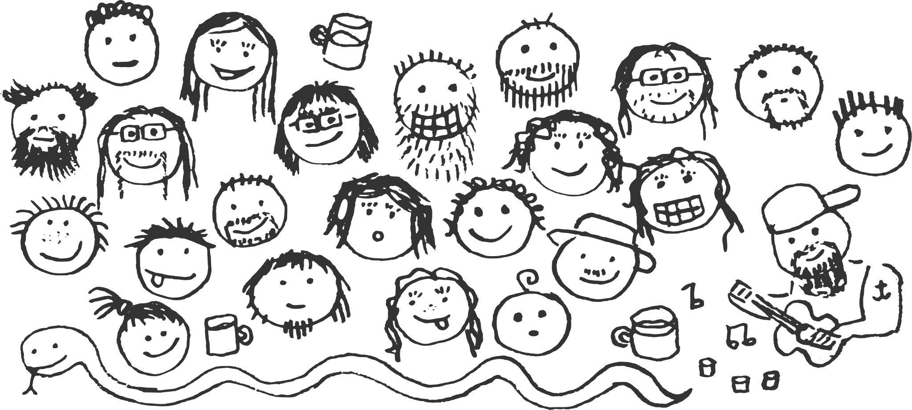

#
#
Python is a modern programming language. See python.org for details. The Czech Python community is active and friendly. Come and join us at meetups and workshops in several cities!

Where you can find us?#
- Pyonýři on Facebook
- Discord
- Email group
- Email group at py.cz
- Pyvo meetups
- PyCon CZ
- PyLadies CZ
- PyData Prague
- IRC #python-cs
- IRC #django-cs
- Slack for organizers
Events#
The events page are in Czech, but we believe the calendar is quite obvious even to someone who doesn't understand Czech. English speakers are welcome to most of our events.
Links#
- PyLadies CZ - There are events for ladies in multiple Czech cities.
- Blog - TODO
- PyCon CZ - Czech Python conference! Help us with preparations, spread the word, register a talk or workshop, consider sponsorship, or just come and enjoy the event!
- Knihovna - We have a library of Python-related books. If you want to borrow one, let us know, and come to the nearest Pyvo meetup to pick the book up. By the way, you already know Python Books, right?
Jobs#
How can you address Czech software engineers working in Python with your job offer? Why is it worth the effort?
How to find Czech Python software engineers?#
- Attend a meetup and ask around. Speak to real people, get them hooked for your ideas, learn about their options and requirements.
- Ask your company to sponsor the next PyCon CZ or PyCon SK conferences. Both are unique opportunities to speak with 400+ developers from the central-european region.
- Write down a job offer. Honest story instead of boring bullet points will bring you larger audience. Don\'t forget to mention how much is it possible to work remotely.
- Send the offer to django-cs and py.cz discussions (see homepage) and to the Facebook group. Many Czech Pythonistas are subscribed to them.
- Please do not overuse any of the discussions. Job offers are welcome, they\'re free and without limitations, but if it starts to be annoying, it doesn\'t have to be without regulation forever.
- Post the offer to global job board -- the board is free, only registration is needed. The offer then appears also on @pyjobo Twitter account. Advertise also at Czech job boards: Jobs.cz, StartupJobs.cz, ...
I wish more Czech Pythonistas would exist!#
We too and it's also the main goal of Pyvec, our nonprofit. Pyvec is dedicated to support all sorts of activities focused on introducing more people to Python in the Czech Republic. Pyvec also supports local chapters of PyLadies and DjangoGirls. If you wish to sponsor our activities, please drop an e-mail to info@pyvec.org.